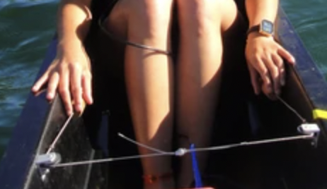

Steering
A row boat (usually only fours and eights) are steered by its cox. This is done by a rope being connected to the fin. The coxswain will then pull the rope the opposite way they wish to go e.g. pull left to go right. The fin turns to change the direction of the boat. The fin sits underneath the boat in the water.
